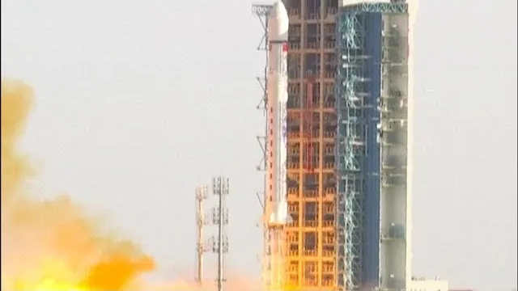

Doświadczenie lotne
I-Conomy to spin-off firmy Aerospazio Tecnologie, która przez lata dostarczyła znaczną liczbę modułów WN do zastosowań kosmicznych, fizyki jądrowej, astrofizyki i aplikacji wymagających wysokiej niezawodności.
Moduły HV3 +3000 V 150 µA i HV3 −3000 V 150 µA do niejawnego zastosowania.
62 lotne moduły HV3 −1200 V do zasilania fotopowielaczy, 14 lotnych dzielników wysokiego napięcia oraz 12 lotnych modułów HV3 +150 V do zasilania krzemowych APD eksperymentu Limadou na pokładzie CSES-01, wystrzelonego z kosmodromu Jiuquan w Chinach.
Współpraca z Chinami
Współpraca z Włochami

Nagranie startu satelity CSES-01, kosmodrom Jiuquan, Chiny (na orbicie od 2 lutego 2018 r.) — źródło: Chińska Telewizja Centralna (CCTV)
80 lotnych modułów WN, które będą zasilać fotopowielacze na pokładzie chińskiego satelity CSES-02.
System zasilania aktuatorów piezoelektrycznych interferometru Fabry’ego–Pérota dla IBIS2. Zestaw trzech szybkich, czteroćwiartkowych systemów WN o bardzo niskim poziomie szumów, od −700 V do +700 V, dla obciążeń pojemnościowych do 25 nF.